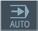
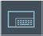
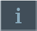
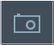

Operator control | Function |
|---|
 | Switch operating area Tap the current operating area, and select the desired operating area from the operating area bar. |
|  | Switch operating mode The operating mode is only displayed. To switch the operating mode, tap the operating area and select the operating area from the vertical softkey bar. The selection for the functions available for the operating mode is opened. |
 | Close the selection The selection for the functions available for the operating mode is closed. |
| | Switching the handwheel on and off The handwheel is switched on for axis traversing (HT10). The "Handwheel" operator control has three states: Gray: Handwheel not available or not configured. Active (not pressed): Handwheel available and configured. Shaded (pressed): Handwheel is assigned to the selected axis.
|
 | Undo Multiple changes are undone one by one. As soon as a change has been completed in an input field, this function is no longer available. |
 | Restoring Multiple changes are restored one by one. As soon as a change has been completed in an input field, this function is no longer available. |
|  | Virtual keyboard Activates the virtual keyboard. |
 | Calculator Displays a calculator. |
|  | Online help Opens the online help. |
|  | Camera Generates a screenshot. |